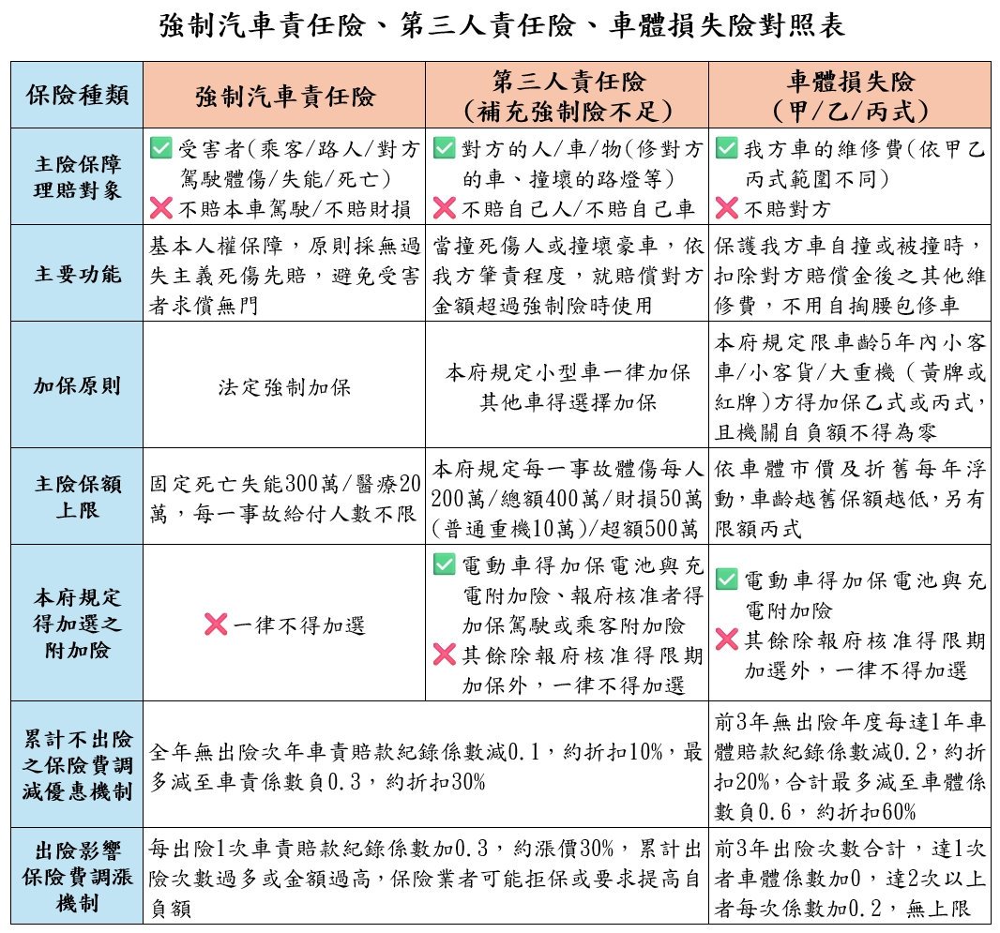

事件案例
中央相關法規
- 車輛管理手冊十四：各機關公務車輛除應投保強制汽車責任保險外，亦得視財力與需要投保駕駛人或乘客保險除外之其他任意險。
- 金管會：
- 強制汽車責任保險法：強制險採無過失責任但限額之方式，理賠因事故受傷害之車內乘客與車外第三人（無人數限制），有關死亡、失能、傷害醫療之費用，但不理賠相關財損，亦不理賠肇事駕駛本人。另依51-1條，逾期6個月仍未加保強制險，將註銷其牌照。
- 強制汽車責任保險給付標準
- 強制汽車責任保險相關法規
- ※相關新聞：
- 行政院主計總處：115年共同性費用編列基準表-節錄車輛保險費
- 考試院銓敘部：公務人員執行職務意外傷亡慰問金發給辦法＃第9條：本辦法施行後，各機關學校不得再為其人員投保額外保險，但執行特殊職務期間得經行政院同意辦理保險，所稱執行特殊職務，指實際從事空中救災、救難、救護、偵巡、飛測、運輸及其他勤務之機組人員等特殊職務，且以所執行之工作確具高度危險性者為限。因同一事由，依本辦法、其他法令規定發給或衍生之下列各款給付，應予抵充。本辦法發給之慰問金高於下列其他各款合併之給付總額者，僅發給其差額；低於或等於者，不再發給。
本府車要點第13點規定
各機關公務車輛應依規定投保強制汽車責任險，其餘任意險應本撙節原則依下列規定辦理：
- 第三人責任險：
- 各類小型車，除僅行駛於特定封閉範圍內或無保險業者願意承保等特殊情形外，應一律加保第三人責任險，其項目及保額應以每一事故第三人體傷每人新臺幣（以下同）二百萬元、總額四百萬元及財損五十萬元為上限，並附加超額責任險五百萬元。
- 前目以外之車輛，如有特殊業務需求，得於前目規定之項目及保額範圍內加保第三人責任險。但普通重型以下機車每一事故第三人財損保額應以十萬元為上限。
- 車體損失險：新購及車齡五年以內小客車、小客貨或大型重型機車，如有特殊業務需求，得視使用頻率加保乙式或丙式車體損失險。但不得約定機關自負額為零。
- 電動汽車特殊附加險：電動汽車基於特殊安全考量，得加保電池與充電相關附加險。
- 駕駛或乘客附加險：業務特性經常載運之乘客或駕駛人，非屬公務人員執行職務意外傷亡慰問金發給辦法適用對象者，得由一級機關附具理由報本府核准後，於第三人責任險加保駕駛或乘客附加險。
各機關應於車輛領牌行駛於道路前或保險到期前，於前項保險項目及保額範圍內完成投保或續保。但車輛年度內因事故多次出險，經機關以提高相關保險機關自負額與保險業者協商，保險業者仍要求增加前項以外之保險項目或保額始同意承保者，機關得檢附相關車輛事故處理紀錄，簽報本府核准後，辦理限期專案保險。
相關保險理賠對象
| 汽機車／理賠 | 我方駕駛 | 我方乘客 | 我方車輛 | 對方駕駛 ＆乘客 |
對方車／ 其他財產 |
其他路人 |
|---|---|---|---|---|---|---|
| 強制險 | ○ | ○ | ○ | |||
| 第三人責任險 | ○ | ○ | ○ | |||
| ├附加超額責任、電動汽車特殊險 | ○ | ○ | ○ | |||
| ├附加駕駛人傷害 | ○ | |||||
| └附加乘客傷害 | ○ | |||||
| 車體險 | ○ | |||||
| └附加竊盜、電動汽車特殊險 | ○ |
 |
本府車輛保險費一致性原則、保費撙節措施
- 110年7月9日府授秘總字第1103008439號府函
- 113年12月18日府授秘總1130155716號府函
本府公務車輛保險及事故理賠實務指引 (摘要草案)
- 機關公務車輛保險費撙節實務指引：
- 車輛得投保之保險項目及保額，均應以本規定許可範圍為限。保險業者之保單如自行增列其他付費保險項目（例如駕駛乘客險及相關增額、住院慰問金、律師費補償、代用車費、免折舊、免追償、拖吊救援、竊盜險、天災險……等），或要求之保額超出規定上限，除依本規定報本府核准者外，應要求業者剔除該等項目後重新報價，或另洽其他符合規定之業者辦理。
- 依車輛管理手冊第14點之規定，機關不得投保駕駛人或乘客保險，並得依公務人員執行職務意外傷亡慰問金發給辦法第2、9、12條之規定，就相關人員執行職務時發生意外情形發給慰問金，同一事由申請慰問金時並應就依法令規定發給或衍生之相關給付予以抵充。但業務特性經常載運之乘客或駕駛人，非屬公務人員執行職務意外亡慰問金發給辦法適用對象者，得由一級機關附具理由報本府核准後，於第三人責任險加保駕駛或乘客附加險。
- 機關已投保之原有保險項目或保額超出本規定（含本規定修正生效前已報府核准或備查案），應於保險屆滿後洽業者修正保險項目或保額，方得辦理後續保險。
- 機關經管車輛達10輛以上，為簡化續保行政作業，得洽保險業者辦理批改為統一保險期間。惟應注意保險期間未滿1年係適用費率較高之短期費率計價，且無法累積年度無賠款紀錄係數以獲取次年減費優惠，爰建議新取得3年內之車輛不宜調整保險期間。
- 機關經公開招標或共同供應契約下訂等方式，取得保險業者後續年度保險報價資料後，應逐車核對各車輛之賠款紀錄係數與該車過往出險紀錄是否相符，並檢視實付保費金額是否如實反映係數之調減優惠或調增結果。
- 機關各類車輛保險預算編列金額，應依行政院主計總處或本府主計處訂定之共同項目費用編列基準規定辦理。
- 其他特殊業務需求：機關遇本規定第1項第4款及第2項之特殊情形，得簽報本府核准後，辦理駕駛或乘客附加險，或本規定保險項目或保額以外之限期專案保險。但有下列情形者，授權由機關自行核定：
- 機關經管有救護車，因專供載運傷患等民眾使用，加保乘客附加險者。
- 市立大學、各特殊教育學校、動物園、陽明教養院、浩然敬老院、本市大眾捷運股份有限公司，經管之客車、客貨車（含復康巴士），屬經常載運院內服務對象、校內學生、民眾用途，加保乘客附加險者。
- 各機關特種車加保第三人責任險，如因大型特種車之特殊性，產險業者無法提供附加超額責任險之商品，而將體傷保額提高至每事故每人500萬元，總額1,000萬元以內者。
- 機關各類機車選擇加保第三人責任險時，其財損保額因產險業者無10萬元保額之商品可供承保，選擇財損保額20萬元以下之商品者。
- 機關新購或車齡5年以內之各類小客車、小客貨，選擇加保丙式車體險時，因產險業者依自用汽車保險定型化契約範本於承保時只能提供「無自負額」商品而加保者。